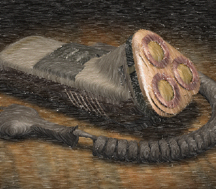

Pencil Shade

 Pencil Shade gives your model the effect of having been sketched with colored pencils.
Pencil Shade gives your model the effect of having been sketched with colored pencils.
The parameters that you can control are:
-
Line Color — the color of the "pencil" line; if not selected, the colors of the faces of the model will be inherited
-
Stroke Length — the length of the "pencil" stroke; between Short and Long
-
Stroke Density — the "weight" of the stroke; between Pale and Dark